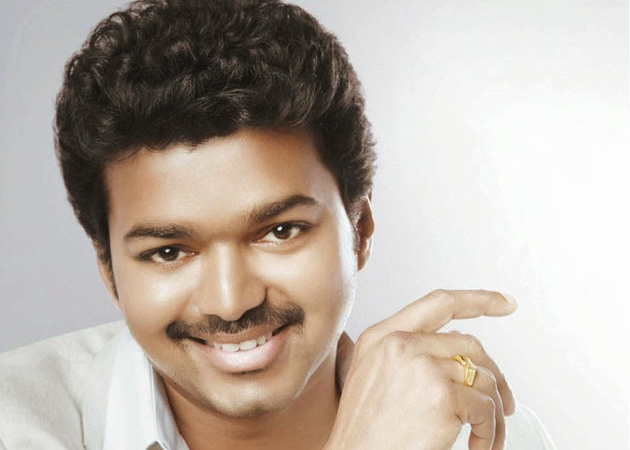

Joseph Vijay Chandrasekhar (born 22 June 1974), known professionally as Vijay, is an Indian actor and politician who works in Tamil cinema. In a career spanning over three decades, he acted in 69 films and is amongst the highest paid actors in India. He is one of the most commercially successful actors in the industry with multiple films amongst the highest-grossing Tamil films of all time. He has won several awards as an actor. Referred to as "Thalapathy" (transl. Commander), he has a significant fan following.
